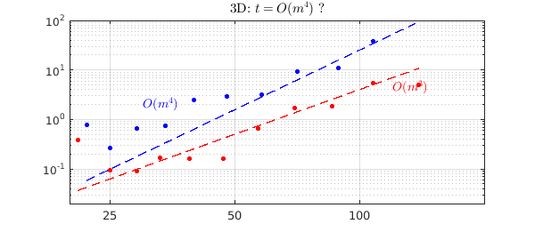
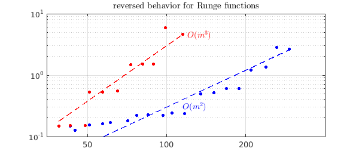

Let's explore how long it takes to construct various chebfuns in 1D, 2D, and 3D. The focus here is on difficult functions where low-rank compression, alas, is ineffective [1]. It takes about 5 minutes to run this example.
1. Timings in 1D
Beginning in 1D, let's consider $f(x) = \tanh(kx)$ for various values of $k$. How does the computer time grow as $k$, and hence the length $m$ of the chebfuns, increases? The experiment below shows that asymptotically, the relationship is linear.
kk = 2.^(3:.3333:13.7); tt = []; mm = [];
chebfunpref.setDefaults('maxLength',2e6)
for k = kk
tic, f = chebfun(@(x) tanh(k*x)); tt = [tt toc];
mm = [mm length(f)];
end
MS = 'markersize'; FS = 'fontsize'; LW = 'linewidth';
IN = 'interpreter'; LT = 'latex'; CO = 'color';
hold off, loglog(mm,tt,'.b',MS,14), grid on
xlabel('length $m$',IN,LT), ylabel('time',IN,LT)
chebfunpref.setDefaults('factory')
hold on, loglog(mm,5e-6*mm,'--b',LW,1)
axis([1e2 1e6 3e-3 1])
text(1.1e4,.2,'$O(m)$',IN,LT,FS,14,CO,'b')
title('1D: $t = O(m)$',IN,LT)
2. Timings in 2D
Now let's do a similar experiment in 2D with the function $f(x,y) = \tanh(k(x+y)/\sqrt 2)$, chosen for the property that it cannot be effectively compressed to low rank. The dots below suggest the complexity is about $O(m^3)$. With a pure tensor product approach, it would be closer to $O(m^2\log m)$, but of course, such an approach would fail to take advantage of the many cases where low-rank compression is effective.
Note that the dots representing timings fall into pronounced groups. This is because the time goes up markedly when Chebfun2 decides to advance from one grid to the next, twice as fine.
kk = 2.^(0:.3333:5.4); tt = []; mm = [];
for k = kk
tic, f = chebfun2(@(x,y) tanh(k*(x+y)/sqrt(2))); tt = [tt toc];
[m n] = length(f); mm = [mm m];
end
hold off, loglog(mm,tt,'.b',MS,14), grid on
xlabel('length $m$',IN,LT), ylabel('time',IN,LT)
hold on, loglog(mm,1e-7*mm.^3,'--b',LW,1), axis([1e1 1e3 2e-2 1e2])
text(1.1e2,1.1,'$O(m^3)$',IN,LT,FS,14,CO,'b')
title('2D: $t = O(m^3)$ ?',IN,LT)
3. Timings in 3D
And now we do the same in 3D with $f(x,y,z) = \tanh(k(x+y+z)/\sqrt 3)$, which is again a function that cannot be compressed to low rank. Empirically, in this range, the complexity looks about like $O(m^4)$.
kk = 2.^(0:.3333:3.4); tt = []; mm = [];
for k = kk
tic, f = chebfun3(@(x,y,z) tanh(k*(x+y+z)/sqrt(3))); tt = [tt toc];
[m n p] = length(f); mm = [mm m];
end
hold off, loglog(mm,tt,'.b',MS,14), grid on
xlabel('length $m$',IN,LT), ylabel('time',IN,LT)
hold on, loglog(mm,2.5e-7*mm.^4,'--b',LW,1), axis([2e1 2e2 2e-2 1e2])
text(30,2,'$O(m^4)$',IN,LT,FS,14,CO,'b')
title('3D: $t = O(m^4)$ ?',IN,LT)
set(gca,'xtick',[25 50 100])

A pure tensor product approach should be $O(m^3 \log m)$. We can use Chebfun3t to check this, superimposing new dots in red on the same plot. Perhaps the complexity prediction is confirmed, but a more useful statement in practice for this feasible range of parameters may simply be that Chebfun3t is about ten times faster than Chebfun3. Again, this ratio would be reversed for the many functions that can be effectively compressed to low rank.
kk = 2.^(0:.3333:3.4); tt = []; mm = [];
for k = kk
tic, f = chebfun3t(@(x,y,z) tanh(k*(x+y+z)/sqrt(3))); tt = [tt toc];
[m n p] = length(f); mm = [mm m];
end
loglog(mm,tt,'.r',MS,14), grid on
xlabel('length $m$',IN,LT), ylabel('time',IN,LT)
hold on, loglog(mm,4e-6*mm.^3,'--r',LW,1)
text(1.2e2,4.4,'$O(m^3)$',IN,LT,FS,14,CO,'r')

4. A reminder of better-behaved functions
These experiments have involved difficult functions for which low-rank compression is ineffective. Luckily, many functions are better behaved. As a reminder of such cases, we now rerun the last experiment except with the $\tanh$ function replaced by a Runge function. Again, the tensor product approach of Chebfun3t has complexity approximately $O(m^3)$, but now the low-rank methods of Chebfun3 do much better, more like $O(m^2)$.
kk = 2.^(0:.3333:6); tt = []; mm = [];
for k = kk
tic, f = chebfun3(@(x,y,z) 1./(1+k*(x.^2+y.^2+z.^2))); tt = [tt toc];
[m n p] = length(f); mm = [mm m];
end
hold off, loglog(mm,tt,'.b',MS,14), grid on
xlabel('length $m$',IN,LT), ylabel('time',IN,LT)
hold on, loglog(mm,3e-5*mm.^2,'--b',LW,1)
axis([35 400 0.1 10])
text(115,.3,'$O(m^2)$',IN,LT,FS,14,CO,'b')
title('reversed behavior for Runge functions',IN,LT)
kk = 2.^(0:.3333:3.4); tt = []; mm = [];
for k = kk
tic, f = chebfun3t(@(x,y,z) 1./(1+k*(x.^2+y.^2+z.^2))); tt = [tt toc];
[m n p] = length(f); mm = [mm m];
end
loglog(mm,tt,'.r',MS,14), grid on
xlabel('length $m$',IN,LT), ylabel('time',IN,LT)
hold on, loglog(mm,3e-6*mm.^3,'--r',LW,1)
text(1.2e2,4.4,'$O(m^3)$',IN,LT,FS,14,CO,'r')
set(gca,'xtick',[50 100 200])

References
[1] L. N. Trefethen, Cubature, approximation, and isotropy in the hypercube, SIAM Review, submitted, 2016; also available at arXiv.